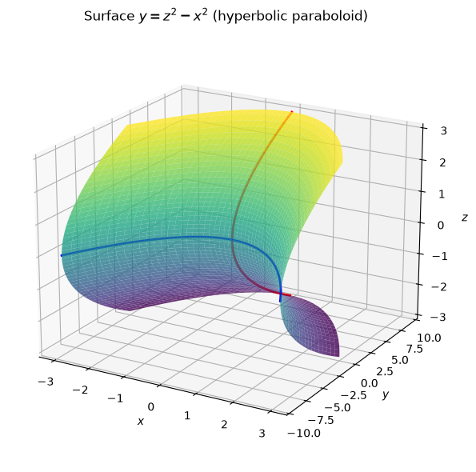
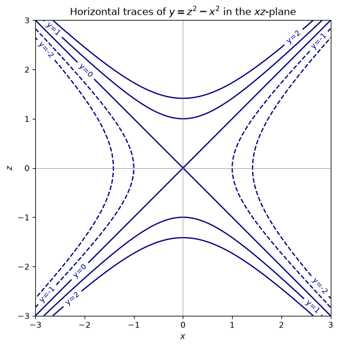
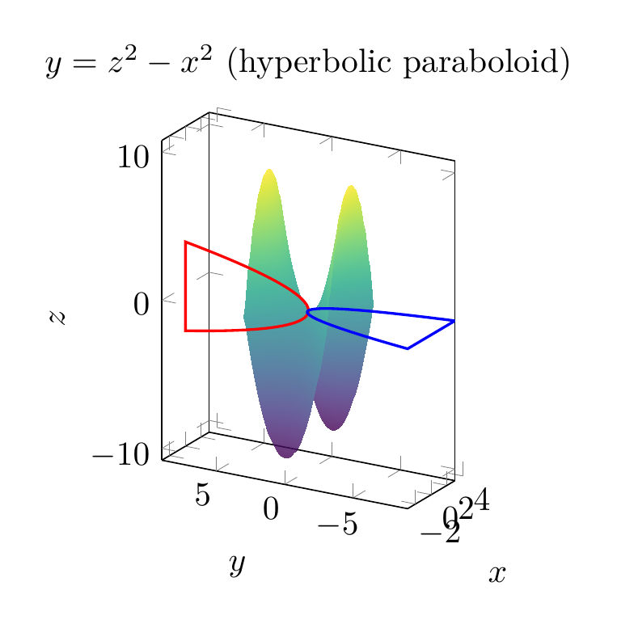
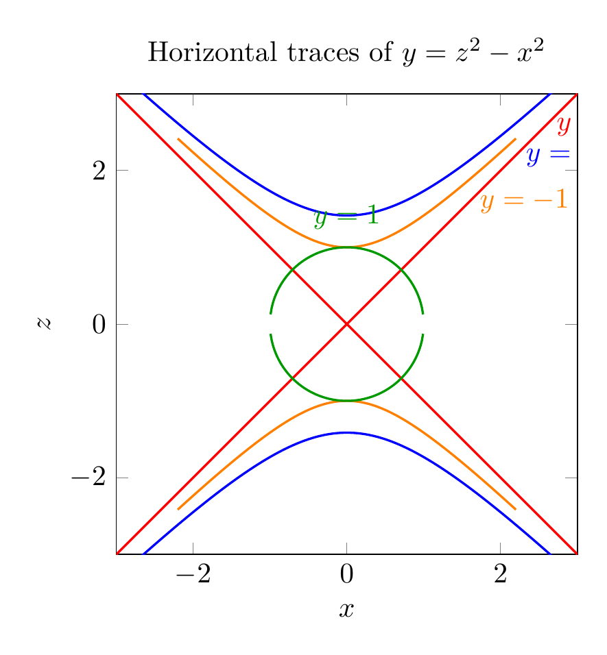

Path: mcma-Kimi-K2.7-Code/calculus-12.6.19/chat_20260825_023926_609205_utc_0800
Problem
Please solve the math problem in the image.

End of problem
Answer
We are asked to use traces to sketch and identify the surface
$$y = z^2 - x^2.$$
## Finding the traces
A **trace** is the intersection of the surface with a plane parallel to one of the coordinate planes.
### 1. Horizontal traces: $y = k$
Set $y=k$. Then
$$z^2 - x^2 = k.$$
This is the equation of a hyperbola in the $xz$-plane (except when $k=0$).
- If $k>0$: hyperbola opening along the $z$-axis.
- If $k<0$: rewrite as $x^2 - z^2 = -k$, a hyperbola opening along the $x$-axis.
- If $k=0$: $z^2 - x^2 = 0$, so $z = \pm x$, two intersecting straight lines.
Thus every horizontal trace is a hyperbola (or a degenerate pair of lines).
### 2. Traces parallel to the $yz$-plane: $x = k$
Set $x=k$. Then
$$y = z^2 - k^2.$$
This is a parabola opening in the positive $y$-direction, with vertex at $(k, -k^2, 0)$.
### 3. Traces parallel to the $xy$-plane: $z = k$
Set $z=k$. Then
$$y = k^2 - x^2.$$
This is a parabola opening in the negative $y$-direction, with vertex at $(0, k^2, k)$.
## Identifying the surface
Since the surface has parabolic traces in two perpendicular directions and hyperbolic traces in the third direction, the surface is a **hyperbolic paraboloid**. It is often called a "saddle surface." Its saddle point is at the origin $(0,0,0)$.
The key signature is:
$$y = \frac{z^2}{b^2} - \frac{x^2}{a^2},$$
which is the standard form of a hyperbolic paraboloid opening along the $y$-axis. Here $a=b=1$.
$$\boxed{\text{The surface } y = z^2 - x^2 \text{ is a hyperbolic paraboloid (saddle surface).}}$$
---


\documentclass[border=10pt]{standalone}
\usepackage{pgfplots}
\pgfplotsset{compat=1.17}
\begin{document}
\begin{tikzpicture}
\begin{axis}[
view={-60}{20},
xlabel=$x$,
ylabel=$y$,
zlabel=$z$,
title={$y=z^2-x^2$ (hyperbolic paraboloid)},
colormap/viridis,
samples=50,
domain=-3:3,
y domain=-3:3,
axis equal image,
]
\addplot3[surf, opacity=0.8, shader=interp] {y^2-x^2};
\addplot3[red, thick, samples=100, domain=-3:3] (0,{x^2},x);
\addplot3[blue, thick, samples=100, domain=-3:3] (x,{-x^2},0);
\end{axis}
\end{tikzpicture}
\end{document}

\documentclass[border=10pt]{standalone}
\usepackage{pgfplots}
\pgfplotsset{compat=1.17}
\begin{document}
\begin{tikzpicture}
\begin{axis}[
xlabel=$x$,
ylabel=$z$,
title={Horizontal traces of $y=z^2-x^2$},
axis equal image,
xmin=-3, xmax=3,
ymin=-3, ymax=3,
]
\addplot[blue, thick, domain=-2.8:2.8, samples=200] {sqrt(x^2+2)};
\addplot[blue, thick, domain=-2.8:2.8, samples=200] {-sqrt(x^2+2)};
\addplot[orange, thick, domain=-2.2:2.2, samples=200] {sqrt(x^2+1)};
\addplot[orange, thick, domain=-2.2:2.2, samples=200] {-sqrt(x^2+1)};
\addplot[red, thick, domain=-3:3, samples=200] {x};
\addplot[red, thick, domain=-3:3, samples=200] {-x};
\addplot[green!60!black, thick, domain=-1.4:1.4, samples=200] {sqrt(1-x^2)};
\addplot[green!60!black, thick, domain=-1.4:1.4, samples=200] {-sqrt(1-x^2)};
\node[blue, anchor=west] at (axis cs:2.2,2.2) {$y=-2$};
\node[orange, anchor=west] at (axis cs:1.6,1.6) {$y=-1$};
\node[red, anchor=west] at (axis cs:2.6,2.6) {$y=0$};
\node[green!60!black, anchor=south] at (axis cs:0,1.1) {$y=1$};
\end{axis}
\end{tikzpicture}
\end{document}

End of answer